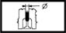

VALVE GUIDES
- Path
- Technical Data > Manufacturing data > 10 ENGINE > 1016 CYLINDER HEAD/S > VALVE GUIDES
- Kind
- technical data / specifications
- Applies to
- all engines; all production periods
- Interactive page
- https://sloeber94.github.io/elrnDB-aGt/en/#/2921819
Applies to: all engines; all production periods
Inner diameter (mm) | Validity |  | ||
|---|---|---|---|---|
6.015 ÷ 6.033 | 1.9 JTD 16V | |||
Outer diameter (mm) | Validity |  | ||
11.010 ÷ 11.030 | 1.9 JTD 16V | |||
Outer diameter oversize (mm) | Validity |  | ||
0.05 / 0.10 / 0.25 | 1.9 JTD 16V | |||
Valve guide internal diameter (reaming) (mm) | Validity | | ||
7.022 ÷ 7.040 | 2.0 JTS | |||
Valve guide outer diameter (mm) | Validity | |||
13.010 ÷ 13.030 | 2.0 JTS | |||
Valve guide outer diameter oversize (mm) | Validity | | ||
0.20 | 2.0 JTS | |||
Valve guide internal diameter (reaming) (mm) | Validity | | ||
|---|---|---|---|---|
7.000 ÷ 7.015 | 3.2 V6 | |||
Valve guide outer diameter (mm) | Validity | |||
Exhaust | ||||
12.050 ÷ 12.068 | 3.2 V6 | |||
Valve guide outer diameter (mm) | Validity | |||
Intake | ||||
12.040 ÷ 12.051 | 3.2 V6 | |||
Valve guide outer diameter oversize (mm) | Validity | | ||
Exhaust | ||||
0.20 | 3.2 V6 | |||
Valve guide outer diameter oversize (mm) | Validity | |||
Intake | ||||
0.20 | 3.2 V6 | |||